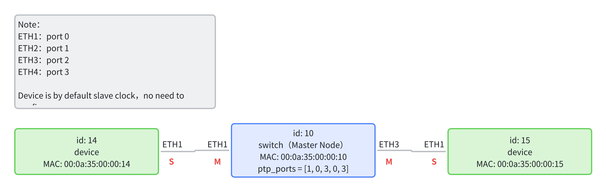

Software Build #
This repo contains source code to enable CaaS Switches’ time synchronization logic and set up TSN GCL (gate control list), switch forwarding rules (including to dual-DMA).
Build #
mkdir build
cd build
cmake ..
make
After successfully build, there should be two executables: “time_sync_app” & “switch_config”
Config #
The “config” directory contains topology & TSN/CaaS schedule results.
This document takes the following topology as an example to give example configurations:

-
***-config.json: Mainly describes the network’s topology, including the type of each node (device or switch), MAC address, PTP port status, and other node information, topology information, and MAC forwarding table. Example and explanation are as follows (note that the comments in the file are just for explanation, do not have such comments in actual use):
{ "nodes": [ // Used to describe the information of each node in the network { "id": 10, // Node ID, corresponding to "src" and "dst" below "type": "switch", // Node type, divided into "switch" and "device" "mac": "00:0a:35:00:00:10", // Node's physical MAC address "ptp_ports": [ 1, 0, 3, 0, 3 ] // Node's PTP port status // The quintuple represents the clock status of [local, ETH1, ETH2, ETH3, ETH4] // Number meaning: (0: MASTER, 1: SLAVE, 2: PASSIVE, 3: DISABLED) // If local is 1, it means that the node is the master clock node; // If local is 0, it means that the node is the slave clock node. }, { "id": 14, "type": "device", "mac": "00:0a:35:00:00:14" }, { "id": 15, "type": "device", "mac": "00:0a:35:00:00:15" } ], "links": [ // Topology information, composed of each link, each link is a directed edge { "id": 0, // link ID "src": 14, // Source node ID of the link "src_port": 0, // Port number of the source node // port 0,1,2,3 correspond to ETH1,2,3,4 in reality "dst": 10, // Destination node ID of the link "dst_port": 0 // Port number of the destination node }, { "id": 1, "src": 10, "src_port": 0, "dst": 14, "dst_port": 0 }, { "id": 2, "src": 10, "src_port": 2, "dst": 15, "dst_port": 0 }, { "id": 3, "src": 15, "src_port": 0, "dst": 10, "dst_port": 2 } ], "fwd": [ // Forwarding table, which can be generated by the scheduling algorithm in CNC // In the forwarding table where you send to yourself, the port is 4 (caas) / 5 (PS ETH for new hardware) { "src": 10, // Current node ID "dst": 14, // Output port number "id": 0, // Entry ID "src_port": 0 // Destination node ID }, { "src": 14, "dst": 10, "id": 1, "src_port": 0 }, { "src": 10, "dst": 15, "id": 2, "src_port": 2 }, { "src": 15, "dst": 10, "id": 3, "src_port": 0 } ] }If the master clock selection algorithm is used, only the configuration of nodes is different, and the rest are the same. The newly added
externalPortConfigurationEnabledandsystem_identityfields are optional items, as shown in the example below:{ "nodes": [ { "type": "switch", "id": 0, "mac": "00:00:00:00:02:01", "ptp_ports": [0,0,0,0,0], "externalPortConfigurationEnabled": 1, // 1: Manually configure the master-slave relationship, 0: Configure the master-slave relationship through the master clock selection algorithm, if this item is not written, the default is 0, that is, configure the master-slave relationship through the master clock selection "system_identity": { // Clock node's clock parameters, used for comparison in the master clock selection algorithm, if this item is not written, the default is the configuration written below "priority1": 254, // First priority "clockClass": 248, // Clock level "clockAccuracy": 254, // Clock accuracy "offsetScaledLogVariance": 17258, // Clock variance "priority2": 247, // Second priority "clock_identity": [0,0,0,0,0,0,0,0] // Clock identifier, different clocks should have different parameters } } ], "links": [ ], "fwd": [ ] } -
***-schedule.json: schedule file, contains each links’ schedule time interval & each CaaS switch’s computation time interval.
[ {// All switches need to be listed to facilitate software recognition of configuration information "type": "switch", // Node type, divided into "switch" and "device" "id": 10, // Node ID, corresponding to "src" and "dst" below "mac": "00:0a:35:00:00:10", // Node's physical MAC address "schedule": [ ] // Can be empty, not used }, { "type": "link", // Type is link, used to describe scheduling information "from": 14, // Source node ID of the link "to": 10, // Destination node ID of the link "from_port": 0, // Output port number "id": 3, "schedule": [ // Scheduling information { "period": 2048, // Scheduling cycle "start": 0, // Start time relative to the entire cycle "end": 5, // End time relative to the entire cycle "job_id": 0, // Job ID in CaaS, if not needed, it can be omitted "flow_id": 0 // Data stream ID } ] }, { "type": "link", "from": 10, "to": 15, "from_port": 2, "id": 0, "schedule": [ { "period": 2048, "start": 1, "end": 6, "job_id": 0, "flow_id": 0, "pkt_size": 1500 // Packet length, if not written, the default is 1500B, this item only exists on the path from Device to Switch } ] } ]
Run #
- Copy topology & schedule file to build dir:
cp [topology name]-config.json build/config.json
cp [topology name]-schedule.json build/schedule.json
- Start time synchronization and initialize GCL and MAC forwarding table according to the configuration (it is recommended to run the time synchronization program on a core (with
taskset -c 1command) to prevent kernel errors and crashes due to time synchronization):
taskset -c 1 ./time_sync
- The log output level is categorized into three types: WARN, INFO, and TRACE. The default log output level is TRACE (the most comprehensive output information, including DEBUG logs). The log output level can be set with the -l parameter:
taskset -c 1 ./time_sync -l w # WARN level
taskset -c 1 ./time_sync -l i # INFO level
taskset -c 1 ./time_sync -l t # TRACE level
Notice that the time sync logic is supposed to run indefinitely as the node should sync to its neighbors again and again.
- Update GCL & switch forwarding rules:
./switch_config